Tea Factory Gen - Reintroducing Tea
Great products were being overlooked.
Improve visibility and approachability without changing the product.
Use environmental cues to increase awareness and store entry.
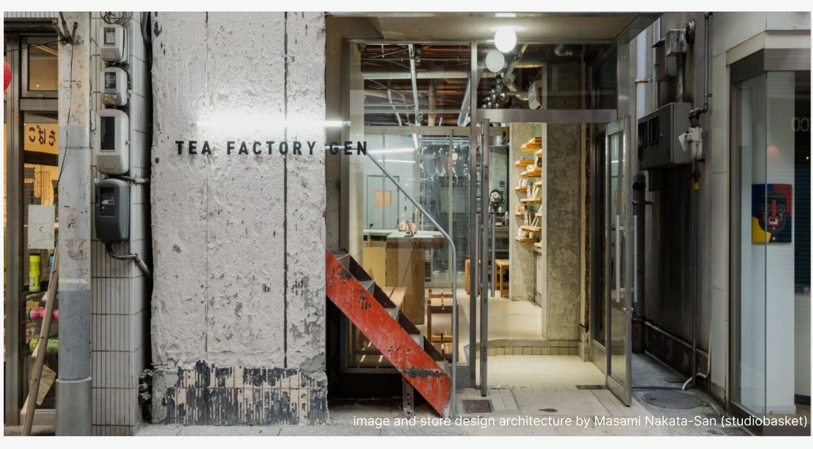
Tea is deeply embedded in Japanese culture, yet increasingly absent from everyday behavior. For many consumers, tea has become associated with expertise, tradition, and ritual rather than curiosity and discovery.
As Tea Factory Gen prepared to expand into a new retail environment, the challenge was not simply to identify the store as a place that sells tea. The challenge was to create a storefront experience capable of attracting people who were not already tea enthusiasts.
The resulting visual language explored how typography, environmental graphics, symbolic forms, and storefront interventions could transform the facade from a static identifier into a tool for engagement.
Rather than communicating tea as a product, the system was designed to communicate tea as an experience worth exploring.
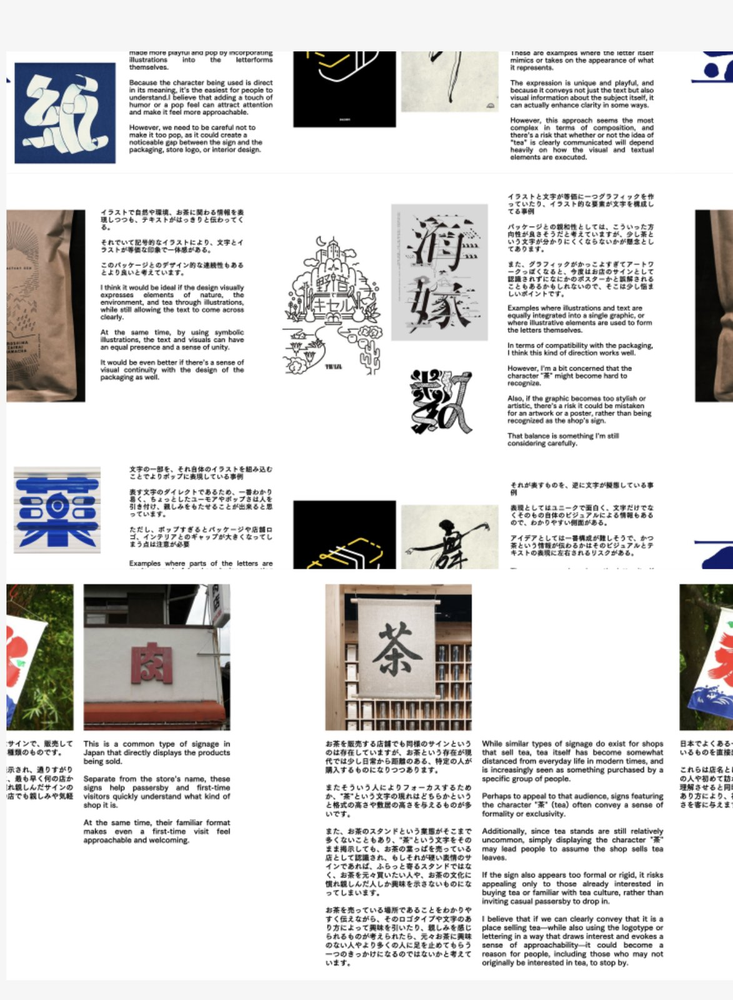
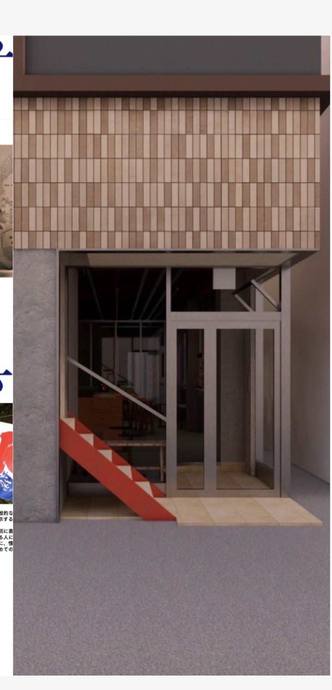
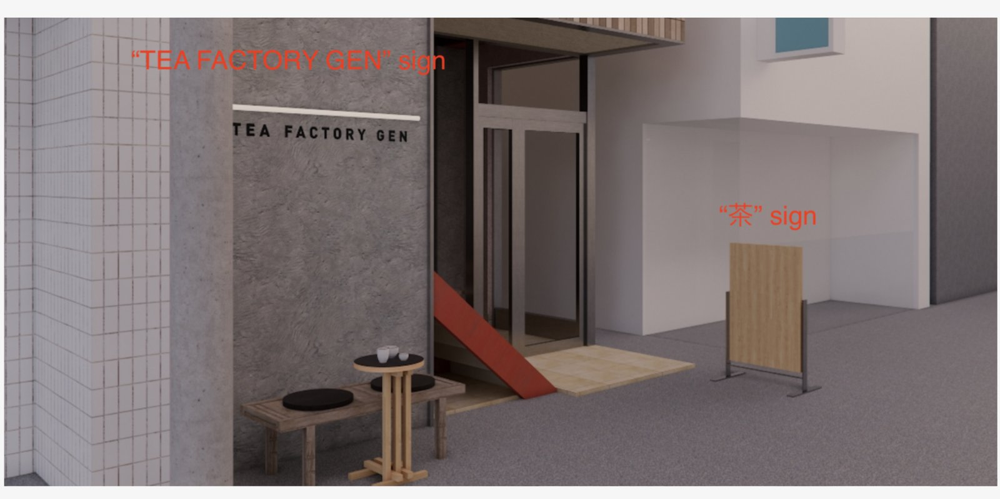
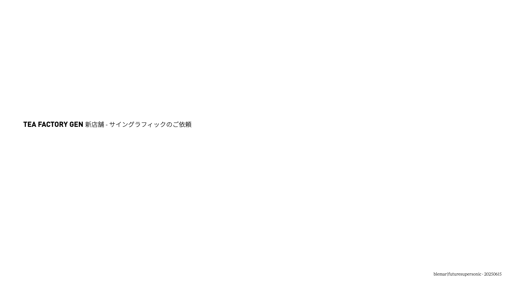
The initial exploration focused on identifying visual signals capable of attracting attention beyond existing tea consumers. Rather than beginning with products, packaging, or traditional tea imagery, the process investigated the cultural artifacts, symbols, behaviours, and visual languages surrounding tea.
Through studies of typography, vernacular signage, Japanese graphic culture, symbolic forms, and environmental interventions, the work explored how familiarity and curiosity could coexist within the storefront. The objective was to discover visual devices that could communicate tea indirectly, encouraging people to engage with the space before understanding exactly what it offered.
These early explorations established the foundation for later concept directions, helping define how Tea Factory Gen could feel contemporary, accessible, and culturally grounded without relying on conventional tea retail cues.
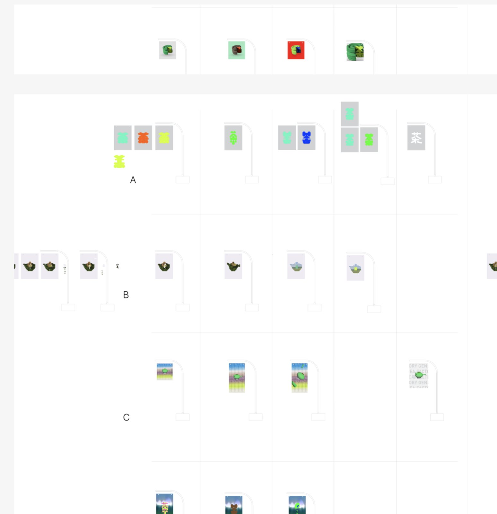
Abstract Familiarity
This direction explores abstraction through form rather than direct representation. Drawing loosely from the structure and proportions of the character 茶, the concepts transform the familiar symbol into a series of graphic objects that suggest tea without explicitly depicting it.
The objective was to create recognition through association rather than explanation. By moving away from literal representations of tea, the work investigates whether shape, rhythm, and silhouette alone can communicate enough familiarity to attract attention while maintaining a sense of curiosity and discovery.
Layered Symbol
This direction uses the kyusu, the traditional Japanese teapot, as a behavioral symbol rather than a product illustration. Through rough digital forms, layered typography, and references to pouring and drinking, the work focuses on the act of tea rather than tea itself.
The intention was to create a visual language that feels contemporary while remaining culturally grounded, using familiar rituals and actions to communicate tea through experience rather than direct explanation.
Typography as Experience
This direction explores the space between tradition and contemporary visual culture. Rustic textures and atmospheric gradients reference the natural origins of tea, while deconstructed three dimensional teapot forms introduce a sense of movement, experimentation, and reinterpretation.
Rather than presenting tea as a fixed cultural object, the work treats it as something open to exploration. The fragmented forms create moments of visual ambiguity that encourage closer inspection, allowing curiosity to become part of the communication itself.
Brand Signal
The concept reinterprets existing elements from Tea Factory Gen's visual identity, reducing them to their most recognizable forms and amplifying them through scale, color, and contrast. Combined with atmospheric imagery inspired by the tea fields themselves, the result creates a visual presence that feels simultaneously familiar and forward looking. Rather than communicating through information, the concept relies on visual energy and recognition to attract attention.
Symbol As Object
This direction transforms the character 茶 into a three dimensional object, shifting it from language into artifact. The intention was not simply to stylize the character, but to explore how a familiar cultural symbol might operate within a more contemporary visual environment. Through bold colour, dimensionality, and playful distortion, the work investigates whether the symbol itself can become a point of attraction and curiosity, encouraging people to engage before they fully understand what they are seeing.
Each concept direction was evaluated against three criteria: recognisability, curiosity, and adaptability. Concepts needed to communicate a connection to tea without relying on literal product imagery, attract attention within a dense urban streetscape, and function across signage, environmental graphics, and future brand applications.
These criteria helped narrow a broad range of visual explorations into a smaller set of viable directions for client review.
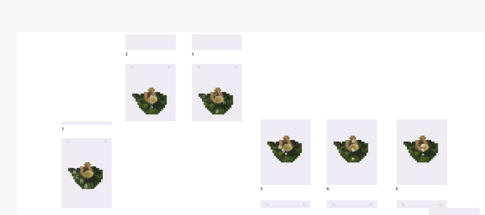
While several directions successfully communicated tea, I ultimately advised moving toward a solution that balanced cultural recognition with contemporary accessibility.
The strongest opportunities emerged when familiar symbols were simplified and amplified rather than completely abstracted. Directions rooted in the character 茶 demonstrated an ability to create immediate recognition while remaining visually distinct from traditional tea retail environments.
My recommendation was to treat the storefront as a cultural invitation rather than a product advertisement. By using bold symbolic forms, restrained typography, and highly visible environmental graphics, the facade could attract both tea enthusiasts and casual visitors without requiring prior knowledge or expertise.
This approach aligned closely with Tea Factory Gen's ambition to broaden engagement with tea culture while maintaining authenticity to its origins.
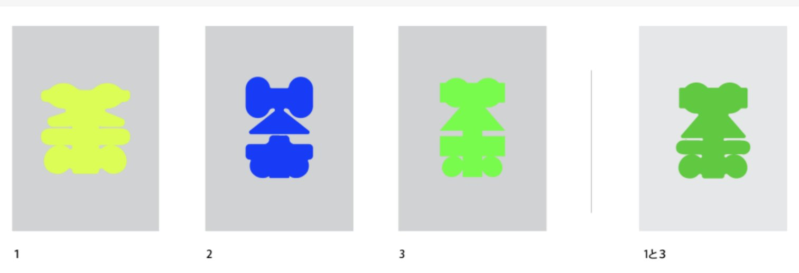
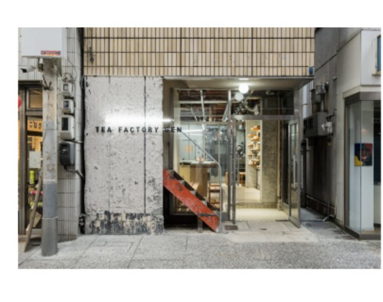
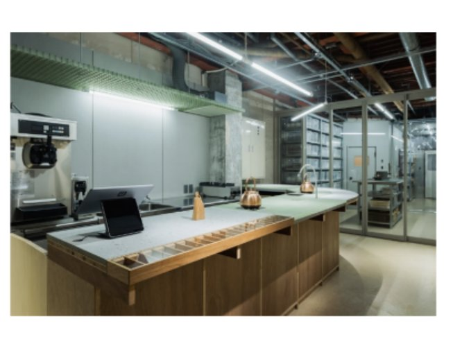
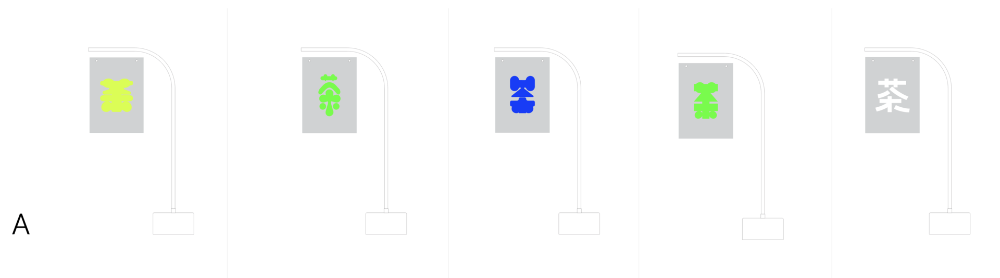
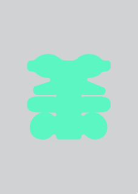
The selected direction was further tested through colour, scale, and environmental applications to understand how the symbol would perform across different touchpoints.
Particular attention was given to visibility from a distance, recognition at street level, and adaptability across temporary and permanent signage systems. By reducing the visual language to a small number of memorable elements, the storefront gained a stronger presence within the surrounding streetscape while remaining flexible enough to evolve over time.
The resulting system demonstrates how a single cultural symbol can operate simultaneously as signage, identity, and environmental graphic, creating a cohesive experience across the entire retail environment.
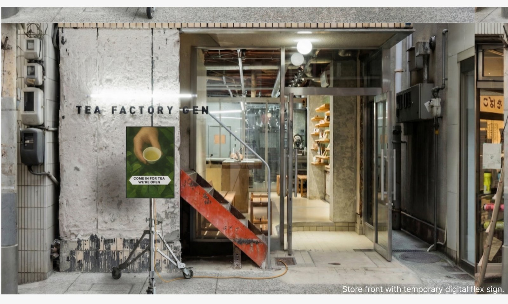
Tea Factory Gen was never intended to compete through information alone. The opportunity was to create a storefront capable of transforming curiosity into participation.
By exploring abstraction, symbolism, typography, and environmental graphics, the project reframed tea not as a specialist product but as a cultural experience worth discovering. The final recommendation demonstrates how strategic visual intervention can help traditional products remain relevant within contemporary retail environments while preserving the authenticity that gives them value.